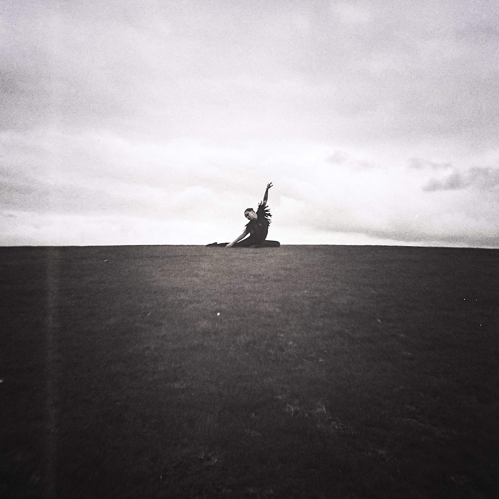
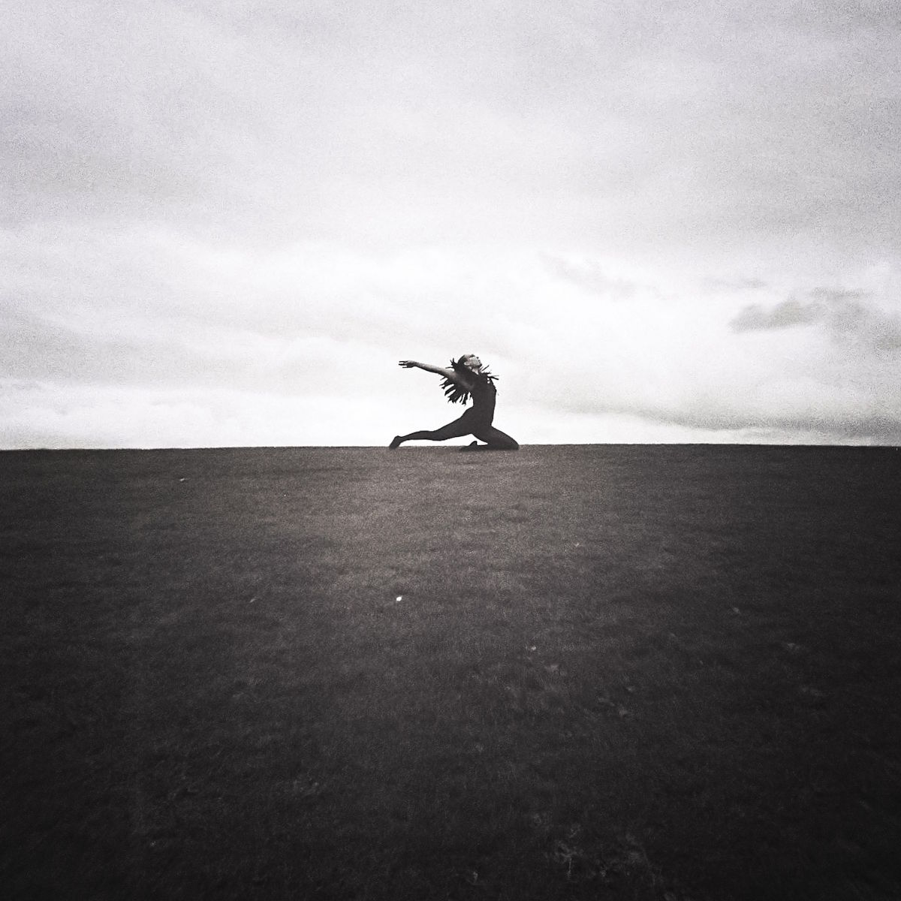
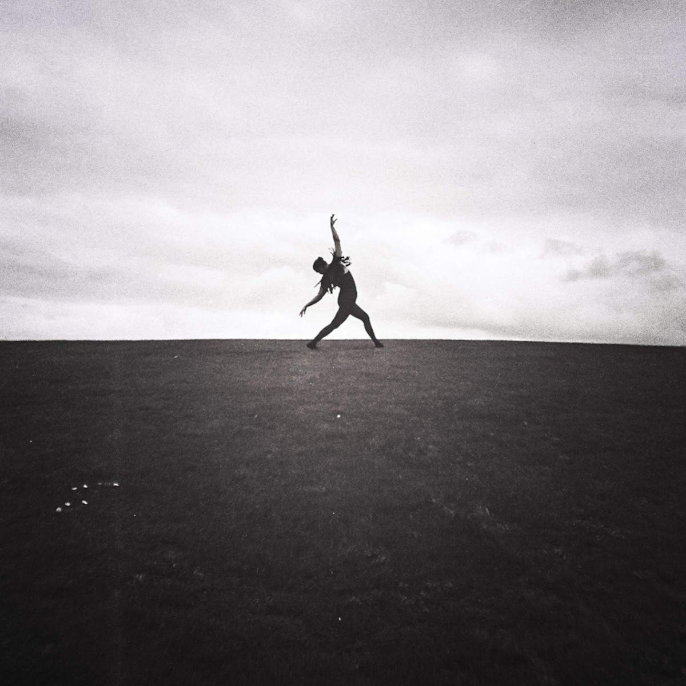
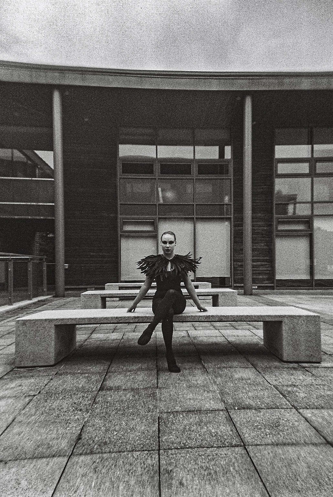
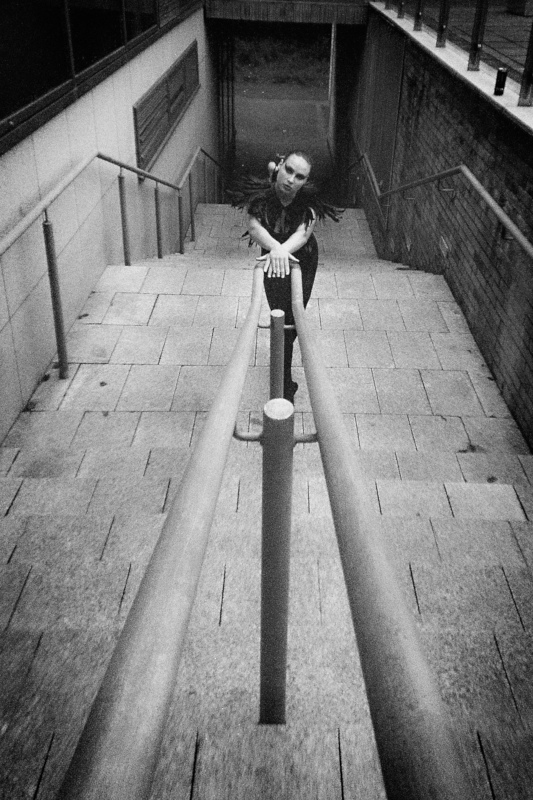
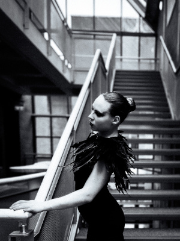
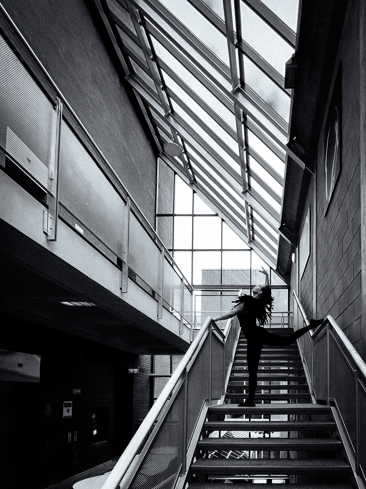
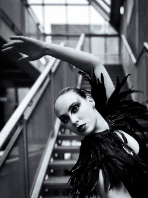
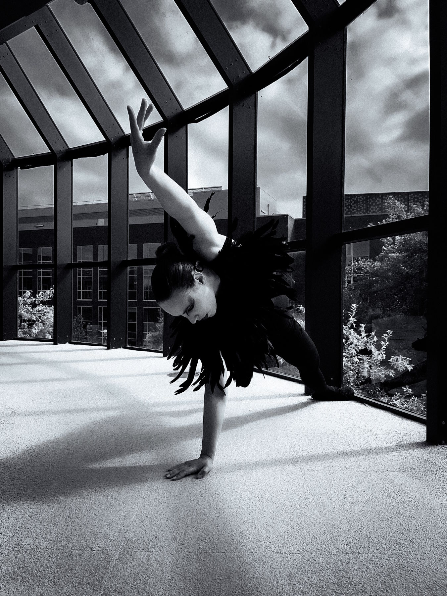
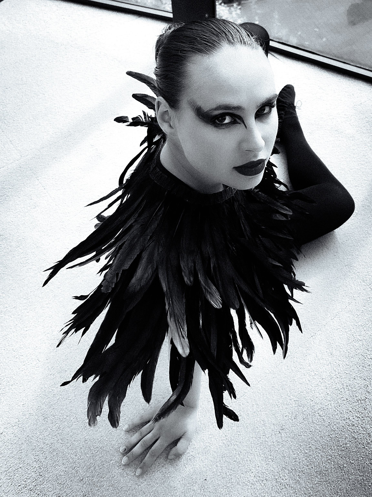

This series follows a lone figure in a swan costume through two landscapes: an open horizon — instinct, nature, the beginning of the journey — and the cold modernist architecture of the University of Limerick, a symbol of progress where a migrant arrives but never fully belongs.










Before black swans were found in Australia, all swans were believed to be white — until they weren't.
Nassim Taleb's "black swan" theory describes unpredictable events that reshape everything after them.
Migration is exactly such an event — sudden, disruptive, profoundly influential.
I never expected that I would become a refugee — just as no one expected to see a black swan.
In 2022, I fled the war in Ukraine and arrived in Ireland. Migration is not an abstraction for me —
it is my life.
On black-and-white film, the swan moves across an open horizon — a body testing the same instinct that
drives birds thousands of kilometres toward survival. Shot digitally, she enters the University of
Limerick's glass-and-concrete architecture — a world built without her in mind.
I chose black-and-white film to evoke the archive — the documentary quality of memory, the preservation
of experiences that resist easy resolution. The digital frames reflect the cold precision of the built
environment, a system not designed for those who arrive unannounced.
The swan embodies fragility and struggle, beautiful yet utterly alone against the cold indifference of
her surroundings. She belongs to neither place. This work is a visual record of what it means to arrive
somewhere that was never built with you in mind.
Model: Elvira Trembach